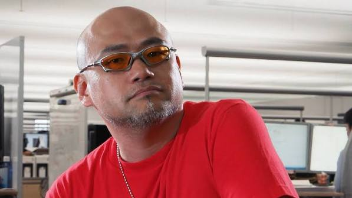

About Hideki Kamiya
Hideki Kamiya is a Japanese video game designer and director. He began his career at Capcom in 1994 and later became known for directing several influential action games.
Throughout his career, Kamiya has worked on games such as Resident Evil 2, Devil May Cry, Viewtiful Joe, Ōkami, Bayonetta, and The Wonderful 101.
One of Hideki Kamiya's major contributions to game design is his focus on unique gameplay mechanics and memorable action systems.

Born: 1970 — Matsumoto, Nagano, Japan
Important Career Events
- 1994 — Joined Capcom and began working as a game planner.
- 1998 — Directed Resident Evil 2.
- 2001 — Directed Devil May Cry.
- 2003 — Directed Viewtiful Joe.
- 2006 — Created and directed Ōkami.
- 2009 — Directed Bayonetta.
Major Contributions
- Resident Evil 2
- Devil May Cry
- Viewtiful Joe
- Ōkami
- Bayonetta
- The Wonderful 101